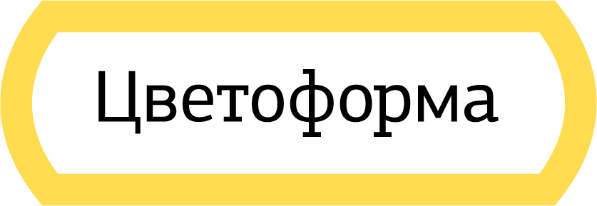
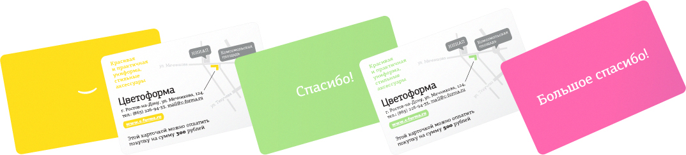
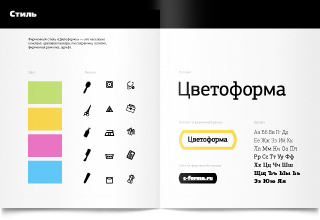
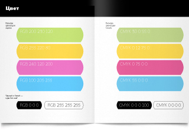
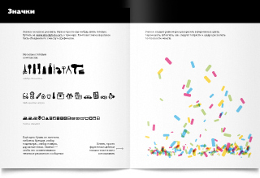
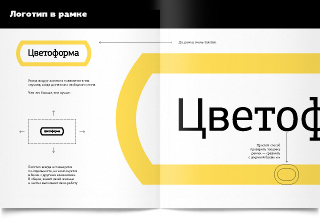
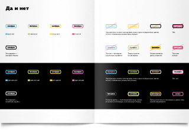
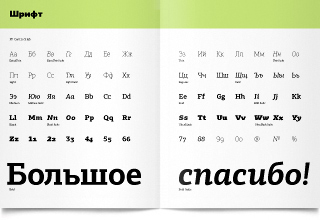

nfrjtdjnbvz.name
Стиль
«Цветоформа» — это удобная и оригинальная униформа для медицинских работников и других профессионалов. Задача — придумать яркий и выразительный фирменный стиль.

В основе стиля — цветовая гамма, логотип с рамкой и фирменные паттерны из значков (их можно рассмотреть вот здесь в самом низу, а заодно почитать хорошую статью :)
А ещё в основе стиля — уместность и понимание контекста. Как в этих подарочных картах-сертификатах, которые вполне удобно подарить врачу вместо конфет и денег:

Гайдлайн рассказывает обо всех важных нюансах:







gjxnf@nfrjtdjnbvz.name